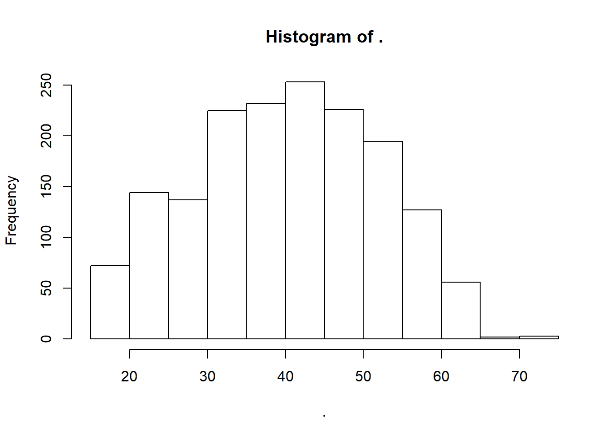

In this chapter, we want to introduce you to the possibly most popular technique/tool of modern statistics, Linear Regression.
After having recoded your variables as in the datamanagement section, you will need to make some further preparatory steps before we can begin the regression.
econ_data %>% str()## 'data.frame': 5000 obs. of 8 variables:
## $ netinc : int NA NA 1000 NA NA 2430 NA NA NA 627 ...
## $ alter : num 43 15 34 62 52 30 24 14 68 44 ...
## $ sex : Factor w/ 2 levels "maennlich","weiblich": 2 2 1 2 2 1 2 1 2 2 ...
## $ contract: num NA NA 40 NA NA 40 NA NA NA 19 ...
## $ actual : num NA NA 60 NA NA 40 NA NA 40 19 ...
## $ trust : int 3 NA 3 3 3 2 2 NA 2 2 ...
## $ rely : int 2 NA 3 1 3 4 3 NA 3 2 ...
## $ inc_kat : chr NA NA "Q2" NA ...Our dataset contains 5000 observations/cases and (in the reduced form) 8 variables. We immediately see that many variables contain a high number of so called NAs (standing for Non-attitude/No Answer/…).
Lets look at the first 10 rows:
econ_data %>% head(10)## netinc alter sex contract actual trust rely inc_kat
## 2267 NA 43 weiblich NA NA 3 2 <NA>
## 5775 NA 15 weiblich NA NA NA NA <NA>
## 10439 1000 34 maennlich 40 60 3 3 Q2
## 11269 NA 62 weiblich NA NA 3 1 <NA>
## 6853 NA 52 weiblich NA NA 3 3 <NA>
## 3878 2430 30 maennlich 40 40 2 4 Q4
## 10384 NA 24 weiblich NA NA 2 3 <NA>
## 6994 NA 14 maennlich NA NA NA NA <NA>
## 6541 NA 68 weiblich NA 40 2 3 <NA>
## 2677 627 44 weiblich 19 19 2 2 Q1A multivariate regression model cannot handle NAs and will thus automatically remove all observations containing at least one single NA per row for the whole regression. Since this happens in a bit of a shady process, we will proceed by eliminating each row containing one or more NAs right away. You should always do this before you begin your analysis.
econ_data %<>% na.omit()We now see that we keep only “complete” rows in our now much smaller subdataset with 1671 observations.
econ_data %>% head(10)## netinc alter sex contract actual trust rely inc_kat
## 10439 1000 34 maennlich 40.0 60.0 3 3 Q2
## 3878 2430 30 maennlich 40.0 40.0 2 4 Q4
## 2677 627 44 weiblich 19.0 19.0 2 2 Q1
## 11738 650 46 weiblich 24.0 24.0 2 2 Q1
## 6095 1029 41 weiblich 25.0 35.0 2 4 Q2
## 7933 221 22 weiblich 19.5 15.0 3 2 Q1
## 5331 90 20 maennlich 37.5 37.5 2 3 Q1
## 2757 318 36 weiblich 10.0 11.0 3 3 Q1
## 6151 200 51 weiblich 7.0 7.0 2 2 Q1
## 14001 2566 63 weiblich 28.0 28.0 2 3 Q4econ_data$sex %>% table() %>% prop.table() %>% round(2)## .
## maennlich weiblich
## 0.52 0.48econ_data$alter %>% hist()
Let’s look into regression.
We first want to estimate a bivariate regression of logged netincome on age.
Therefore, we first create a new variable called log_netinc
econ_data$log_netinc <- econ_data$netinc
# log(0) is not possible => manually correct created NAs
econ_data$log_netinc [is.na(econ_data$log_netinc)] <- 0model1 <- lm(log_netinc ~ alter,data = econ_data)
summary(model1)##
## Call:
## lm(formula = log_netinc ~ alter, data = econ_data)
##
## Residuals:
## Min 1Q Median 3Q Max
## -2117.3 -607.5 -109.8 417.2 8584.4
##
## Coefficients:
## Estimate Std. Error t value Pr(>|t|)
## (Intercept) 370.653 85.546 4.333 1.56e-05 ***
## alter 28.242 2.022 13.968 < 2e-16 ***
## ---
## Signif. codes: 0 '***' 0.001 '**' 0.01 '*' 0.05 '.' 0.1 ' ' 1
##
## Residual standard error: 970.1 on 1669 degrees of freedom
## Multiple R-squared: 0.1047, Adjusted R-squared: 0.1041
## F-statistic: 195.1 on 1 and 1669 DF, p-value: < 2.2e-16The regression can easily be expanded to a multivariate context by adding more variables, such as gender or a quadratic age term.
model2 <- lm(log_netinc ~ alter + I(alter^2) ,
data = econ_data)
summary(model2)##
## Call:
## lm(formula = log_netinc ~ alter + I(alter^2), data = econ_data)
##
## Residuals:
## Min 1Q Median 3Q Max
## -1768.9 -585.2 -114.0 399.4 8576.7
##
## Coefficients:
## Estimate Std. Error t value Pr(>|t|)
## (Intercept) -1009.8507 248.2809 -4.067 4.98e-05 ***
## alter 102.6706 12.7412 8.058 1.46e-15 ***
## I(alter^2) -0.9189 0.1554 -5.915 4.02e-09 ***
## ---
## Signif. codes: 0 '***' 0.001 '**' 0.01 '*' 0.05 '.' 0.1 ' ' 1
##
## Residual standard error: 960.4 on 1668 degrees of freedom
## Multiple R-squared: 0.1231, Adjusted R-squared: 0.122
## F-statistic: 117 on 2 and 1668 DF, p-value: < 2.2e-16model3 <- lm(log_netinc ~ alter + I(alter^2) + sex ,
data = econ_data)
summary(model3)##
## Call:
## lm(formula = log_netinc ~ alter + I(alter^2) + sex, data = econ_data)
##
## Residuals:
## Min 1Q Median 3Q Max
## -2030.8 -557.5 -117.4 383.3 8216.9
##
## Coefficients:
## Estimate Std. Error t value Pr(>|t|)
## (Intercept) -622.4983 226.8270 -2.744 0.00613 **
## alter 103.0938 11.5914 8.894 < 2e-16 ***
## I(alter^2) -0.9326 0.1413 -6.598 5.57e-11 ***
## sexweiblich -798.9486 42.8083 -18.663 < 2e-16 ***
## ---
## Signif. codes: 0 '***' 0.001 '**' 0.01 '*' 0.05 '.' 0.1 ' ' 1
##
## Residual standard error: 873.7 on 1667 degrees of freedom
## Multiple R-squared: 0.2746, Adjusted R-squared: 0.2733
## F-statistic: 210.4 on 3 and 1667 DF, p-value: < 2.2e-16Interpret regression coefficients!
The stargazer package enables us to neatly
library(stargazer)##
## Please cite as:## Hlavac, Marek (2018). stargazer: Well-Formatted Regression and Summary Statistics Tables.## R package version 5.2.1. https://CRAN.R-project.org/package=stargazer# Nice Apa-Ready Output:
stargazer(model1,model2,model3, #regression models
type = "text", # character vector (eg. "text" / "html" / "latex")
title = "Hier steht die Überschrift", # header
style = "default", # style (choice see below)
# out = "table1_econ.html", # path and output of file
out.header = FALSE, # logical vector: should output file contain code-header?
column.labels = c("basic model","age quadratic","full model"), # column labels for mod1/mod2
column.separate = c(1,1,1), # how column labels should be assigned (label over sev. columns possible)
covariate.labels = c("Age", # Covariate Labels
"Age squared",
"Sex female",
"Intercept"),
dep.var.caption = "Dep. Var.", # Caption (Top) of dependent variable
star.cutoffs = c(0.05,0.01,0.001),
dep.var.labels = c("Logged Net-Income"))##
## Hier steht die Überschrift
## =================================================================================================
## Dep. Var.
## -----------------------------------------------------------------------------
## Logged Net-Income
## basic model age quadratic full model
## (1) (2) (3)
## -------------------------------------------------------------------------------------------------
## Age 28.242*** 102.671*** 103.094***
## (2.022) (12.741) (11.591)
##
## Age squared -0.919*** -0.933***
## (0.155) (0.141)
##
## Sex female -798.949***
## (42.808)
##
## Intercept 370.653*** -1,009.851*** -622.498**
## (85.546) (248.281) (226.827)
##
## -------------------------------------------------------------------------------------------------
## Observations 1,671 1,671 1,671
## R2 0.105 0.123 0.275
## Adjusted R2 0.104 0.122 0.273
## Residual Std. Error 970.139 (df = 1669) 960.410 (df = 1668) 873.740 (df = 1667)
## F Statistic 195.098*** (df = 1; 1669) 117.029*** (df = 2; 1668) 210.372*** (df = 3; 1667)
## =================================================================================================
## Note: *p<0.05; **p<0.01; ***p<0.001